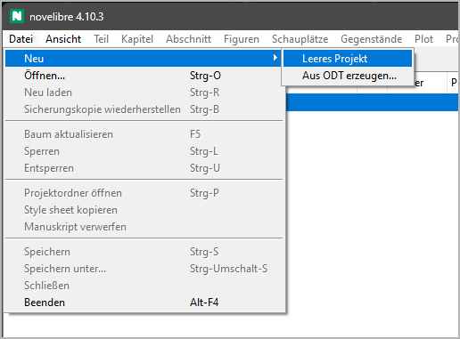
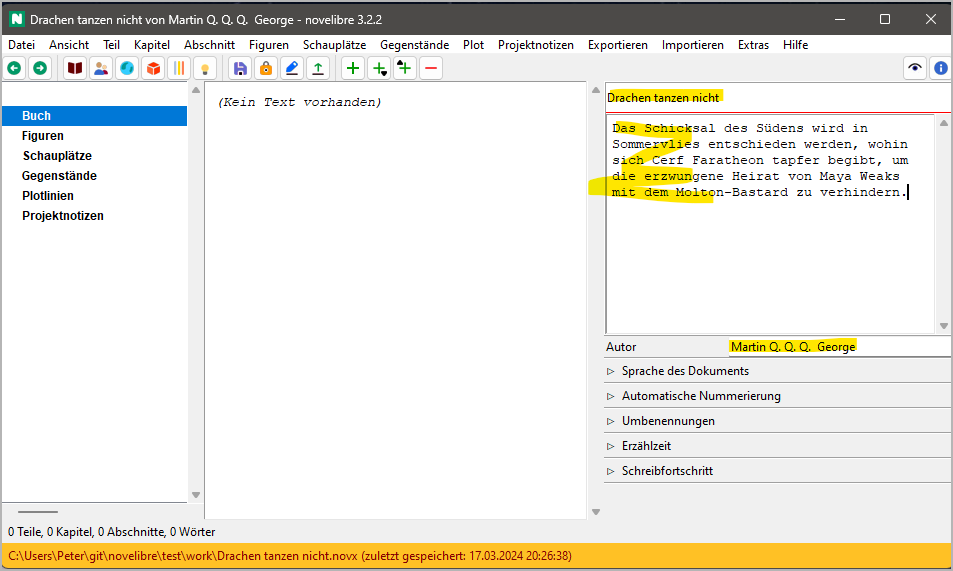
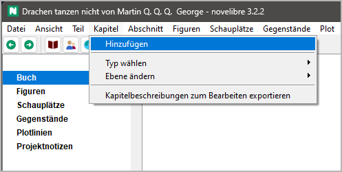
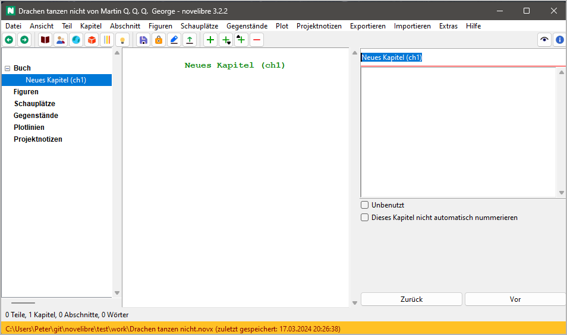
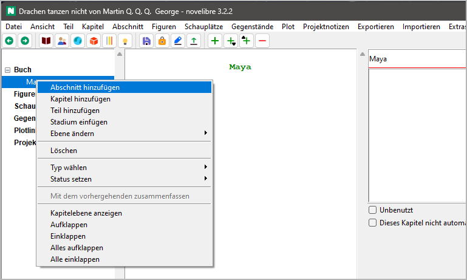
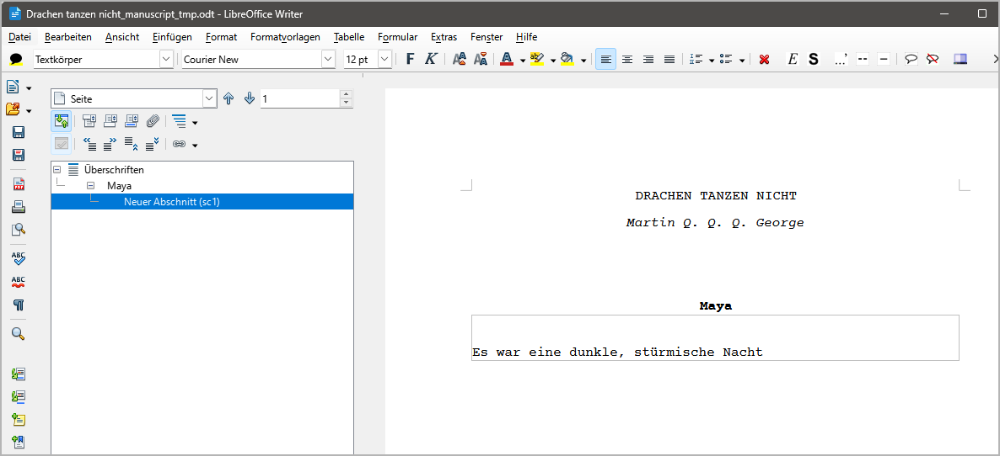
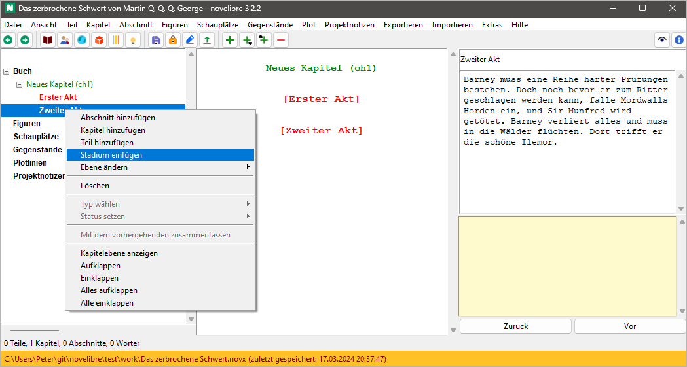
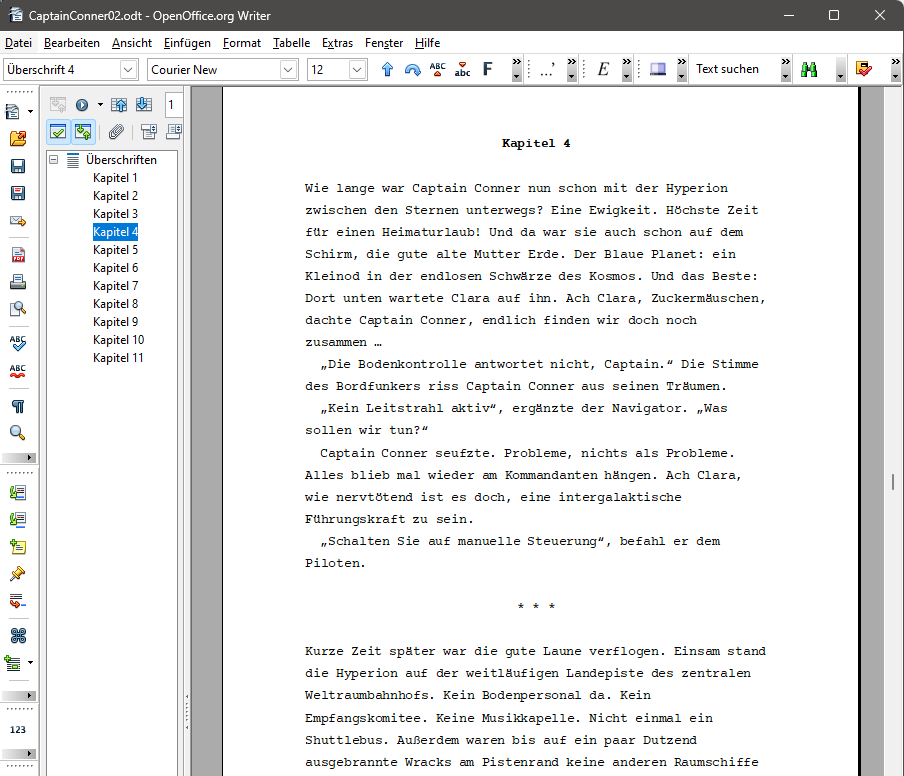
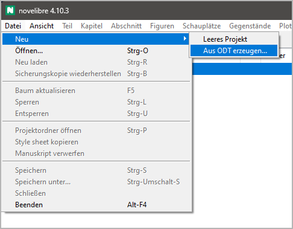
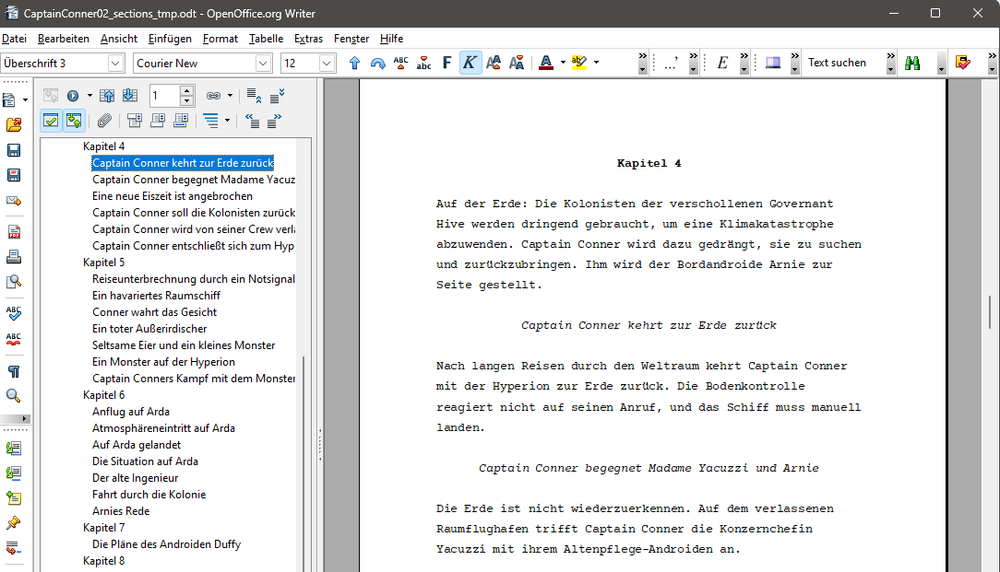

Erste Schritte
Im folgenden werden verschiedene Möglichkeiten beschrieben, mit novelibre zu beginnen. Wenn Sie ein neues Romanprojekt „von Null“ starten, können Sie es mit novelibre anlegen und dann Schrit für Schritt aufbauen. Wenn Sie bereits ein Werk angefangen haben, und das Manuskript als Writer-Dokument vorliegt, können Sie es nach entsprechender Vorbereitung importieren, und novelibre legt automatisch die Kapitel- und Abschnittsstruktur an. Auch eine Gliederung mit Inhaltsangaben von geplanten Kapiteln oder Abschnitten lässt sich mit novelibre importieren.
Hinweis
Das alles gibt es in gleicher oder ähnlicher Form auch bei anderen Schreibprogrammen. Alternativ können Sie Ihren Romanentwurf aber auch als Zeitstrahl mit Programmen wie Timeline oder Aeon Timeline 2 anlegen, oder als Mindmap mit Scapple. Mit Hilfe der entsprechenden Plugins oder Skripte erhalten Sie ein novelibre-Projekt zum Weiterarbeiten.
Von Null beginnen
Wenn Sie novelibre starten, indem Sie eine .novx-Datei auf das Symbol ziehen, wird dieses Projekt geöffnet. Andernfalls wird das Projekt der letzten Sitzung automatisch wieder geöffnet, falls es eines gibt.
Nehmen wir an, dass beides nicht der Fall ist, z. B. wenn das Programm zum allerersten Mal nach der Installation aufgerufen wird. Nehmen wir außerdem an, dass wir noch keine Vorbereitungen getroffen haben, d.h. wir haben weder ein angefangenes Werk noch eine Gliederung irgendeiner Art. Zunächst legen wir mit Datei > Neu > Leeres Projekt ein neues leeres Projekt an.
Ein Dateiauswahldialog öffnet sich und fragt nach dem Dateinamen und dem Speicherort des neuen Projekts. Anders als bei OpenOffice/LibreOffice, ist der Dateiauswahldialog nicht auf ein definiertes Dokumentenverzeichnis voreingestellt. Wenn Sie einen Dateinamen für Ihr Projekt eingeben, achten Sie darauf, auch das richtige Projektverzeichnis zu wählen.
Tipp
Es ist empfehlenswert, einen eigenen Ordner für das Projekt anzulegen, da alle exportierten Dokumente auch hier gespeichert werden. Dazu gehören auch Hilfsdateien wie Zeitleisten oder projektbezogene Konfigurationsdateien für Werkzeuge und Plugins.
Wichtig
Stellen Sie bitte sicher, dass ihr neues Projekt nicht im Installationsordner liegt.
Es ist nicht obligatorisch, aber wir sollten dann einen Titel und einen Autorennamen eingeben, vielleicht auch eine Beschreibung unserer Idee. Um gleich loslegen zu können, verschieben wir die restlichen Projekteinstellungen auf später.
Wir brauchen mindestens einen Abschnitt, um mit dem Schreiben beginnen zu können. Und dieser muss zu einem Kapitel gehören. Also erstellen wir jetzt das erste Kapitel mit Kapitel > Hinzufügen.
Nachdem das Kapitel erstellt wurde, setzt novelibre den Fokus auf den Kapitel-Titel am oberen Rand des rechten Fensters. Überschreiben wir den vorgegebenen Titel.
Hinweis
Wenn Sie sich dafür entscheiden, novelibre die Kapitel automatisch nummerieren zu lassen, können Sie das überspringen und den voreingestellten Titel stehenlassen.
Es gibt nun mehrere Möglichkeiten, einen Abschnitt hinzuzufügen. In diesem Beispiel klicken wir mit der rechten Maustaste auf das Kapitel und wählen Abschnitt Hinzufügen.
Gleich mit dem Manuskript beginnen
Sobald der neue Abschnitt in der Baumansicht erscheint,
können wir ein Manuskript exportieren.
Klicken Sie einfach auf die Schaltfläche  in der Werkzeugleiste.
in der Werkzeugleiste.
Fertig! Writer sollte sich nun mit dem Manuskript öffnen. Fangen Sie einfach an, Ihren Roman innerhalb des Textrahmens zu schreiben.
Wir können nun mit Writer weiterarbeiten, wie auf der folgenden Seite beschrieben, und während des Schreibens neue Abschnitte und Kapitel erzeugen.
Tipp
Jetzt können Sie das Manuskriptdokument „aus dem Stegreif“ bearbeiten, bis es Ihnen sinnvoll erscheint, alles zu novelibre zurückzuspielen, um dort eine Übersicht zu erzeugen und Ihr Projekt aufzusetzen.
Ich empfehle jedoch, das zumindest täglich am Ende Ihrer Schreibsitzung zu tun und am nächsten Tag ein neues Manuskriptdokument zu exportieren. Dann kommen Sie nicht in Verzug mit der Eingabe der Kapitelüberschriften und der Inhaltsbeschreibungen, und Sie bekommen Ihre Kapitel nummeriert, falls gewünscht. Außerdem speichert novelibre dann Einträge im täglichen Wortzählprotokoll.
Eine Kapitelstruktur anlegen
Falls Sie es vorziehen, vor dem eigentlichen Schreiben zuerst einmal einen Plan zu machen, ist novelibre das richtige Werkzeug für Sie. Dann rufen Sie nicht gleich Writer mit einem leeren Dokument auf, sondern erzeugen zuerst ein Gerüst aus leeren Kapiteln, für die Sie Inhaltsangaben eingeben. Oder Sie belassen es zunächst bei einem einzigen leeren Kapitel, das Sie mit leeren Abschnitten füllen, die Sie dann später auf weitere Kapitel verteilen können. Die Ergebnisse Ihrer Vorbereitungen können als Textdokumente in Form von Zusammenfassungen exportiert werden, beispielsweise auf der Ebene von Kapiteln oder Abschnitten.
Eine dramaturgische Struktur aufbauen
Allerdings können Sie auch auf einer abstrakteren Ebene beginnen und zuerst Stadien wie Akte oder Schritte anlegen, um dann später die Abschnitte als Szenen einzufügen. Dazu erstellen Sie zunächst mindestens ein Kapitel. Dann erzeugen Sie Ihre Stadien.
Das Verfahren wird auf der Seite Mit novelibre plotten beschrieben. Dort erfahren Sie auch, wie Sie mehrere Handlungsstränge oder Charakterbögen anlegen.
Tipp
Mit dem nv_templates-Plugin können Sie novelibre Ihr neues Projekt mit einer vorgefertigten Struktur wie dem „Drei-Akt-Modell“ oder „Save The Cat“ aufsetzen lassen.
Ein Handlungsraster anlegen
Falls Sie Ihren Roman mit einem „Plot grid“-Handlungsraster ausarbeiten wollen, können Sie das mit novelibre tun:
Erstellen Sie ein neues leeres Projekt, wie oben beschrieben.
Fügen Sie ein einzelnes Kapitel hinzu.
Wählen Sie dieses Kapitel aus, und fügen Sie dann mehrere Abschnitte hinzu..
Falls Sie mehr als die zulässige Anzahl Abschnitte brauchen, wiederholen Sie Schritt 3. Es ist jedoch sinnvoll, zuerst einmal mit weniger Abschnitten zu beginnen, die sich leichter auf die später zu erzeugenden Kapitel verteilen lassen. Sie können das Handlungsraster mit der Zeit erweitern.
Legen Sie die benötigten Plotlinien an.
Exportieren Sie ein Handlungsraster und füllen Sie die Tabellenzellen aus.
Importieren Sie das Handlungsraster.
Erzeugen Sie mehr Kapitel, und verteilen Sie die Abschnitte darauf.
Mit einem angefangenen Werk beginnen
Nehmen wir an, Sie haben bereits ein umfangreiches Romanmanuskript mit Writer begonnen und wollen nun mit novelibre weiterarbeiten. In diesem Fall stellen Sie zunächst sicher, dass es so gestaltet ist, dass novelibre seine Teile, Kapitel und Abschnitte erkennen kann.
Tipp
Es ist empfehlenswert, einen eigenen Ordner für das Projekt anzulegen und Ihr Manuskript dorthin zu verschieben, bevor Sie es mit novelibre importieren.
Wichtig
- Einen Text für den Import vorbereiten
Im bestehenden Manuskript darf es keine Überschrift dritter Ordnung geben.
Überschrift 1 → Teile-Titel.
Überschrift 2 → Kapitel-Titel.
* * *→ Abschnittstrenner (nicht vor dem ersten Abschnitt im Kapitel).Der ganze restliche Text wird als Inhalt von Abschnitten behandelt.
Das folgende Bild zeigt ein Beispiel für ein angefangenes Manuskript. Beachten Sie die Leerzeichen zwischen den Sternchen des Abschnittstrenners. Es ist nicht nötig, die Abschnittstrenner zu zentrieren.

Vorsicht
Textauszeichnungen, die nicht von novelibre unterstützt werden, gehen verloren. Dasselbe gilt für Bilder. Wenn also Ihr Werk ein ausgefeiltes Layout braucht, das jenseits von novelibres Möglichkeiten liegt, erwägen Sie, beim Schreiben Kommentare als Gedächtnisstützen einzufügen. Das kann später helfen, die speziellen Formate anzuwenden, wenn Sie Ihren fertigen Roman für die Veröffentlichung vorbereiten. Falls das nicht genügt, ist novelibre vielleicht nicht das richtige Werkzeug für Sie.
Tipp
Die passenden Abschnittstrenner lassen sich am einfachsten mit einem Makro erzeugen, das in der novelibre-tools-Erweiterung enthalten ist.
Wenn Ihr Manuskript vorbereitet ist, erzeugen Sie Ihr neues Projekt mit Datei > Neu > Aus ODT erzeugen….
Es öffnet sich ein Dateiauswahldialog und fragt nach dem ODT-Dokument. Das neue Projekt wird im selben Verzeichnis angelegt und nach der Manuskriptdatei benannt, aber mit der .novx-Erweiterung.
Vorsicht
Sobald Ihr Roman in novelibre importiert ist, wird das ursprüngliche ODT-Dokument nicht mehr gebraucht. Wenn Sie es aber behalten wollen, verschieben Sie es am besten anderswohin, so dass es später nicht durch ein exportiertes Dokument überschrieben wird.
Tipp
Nachdem Sie ein umfangreiches Werk importiert haben, könnten Sie eine ganze Menge Abschnitte zu betiteln und zu beschreiben haben. Ein Handlungsraster könnte Ihnen dabei eine große Hilfe sein.
Mit einer Gliederung beginnen
Statt eines angefangenen Werks können Sie auch eine mit Writer geschriebene Gliederung nach novelibre importieren. Dann erhalten Sie ein Romanprojekt mit leeren, aber betitelten und beschriebenen Kapiteln und Abschnitten. Auf den ersten Blick sieht eine Gliederung einem angefangenen Werk sehr ähnlich, doch sie hat Überschriften dritter Ordnung für die Abschnittstitel. Wenn novelibre Überschriften dritter Ordnung findet, betrachtet es den gesamten Textkörper als Beschreibung. In diesem Fall werden Textauszeichnungen nicht berücksichtigt.
Tipp
Es ist empfehlenswert, einen eigenen Ordner für das Projekt anzulegen und Ihre Gliederung dorthin zu verschieben, bevor Sie es mit novelibre importieren.
Wichtig
- Eine Gliederung für den Import vorbereiten
Eine Gliederung hat mindestens eine Überschrift dritter Ordnung.
Überschrift 1 → Teile-Titel.
Überschrift 2 → Kapitel-Titel.
Überschrift 3 → Abschnittstitel.
Der ganze restliche Text wird als Beschreibung von Kapiteln und Abschnitten behandelt.
Das folgende Bild zeigt ein Beispiel für eine Gliederung. Der Fließtext direkt unter der Kapitelüberschrift ist die Kapitelbeschreibung. Der Fließtext direkt unter der Abschnittsüberschrift ist die Abschnittsbeschreibung. Die Beschreibungen sind jedoch optional.

Wenn Ihre Gliederung vorbereitet ist, erzeugen Sie Ihr neues Projekt mit Datei > Neu > Aus ODT erzeugen….
Es öffnet sich ein Dateiauswahldialog und fragt nach dem ODT-Dokument. Das neue Projekt wird im selben Verzeichnis angelegt und nach der Gliederungsdatei benannt, aber mit der .novx-Erweiterung.
Vorsicht
Sobald Ihre Gliederung in novelibre importiert ist, wird das ursprüngliche ODT-Dokument nicht mehr gebraucht. Wenn Sie es aber behalten wollen, verschieben Sie es am besten anderswohin, so dass es später nicht durch ein exportiertes Dokument überschrieben wird.
Die aktuelle Gliederung können Sie jederzeit als „Beschreibungen“ (getrennt nach Teilen, Kapiteln und Abschnitten) exportieren, bearbeiten und importieren.